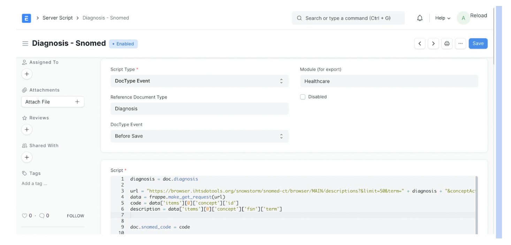
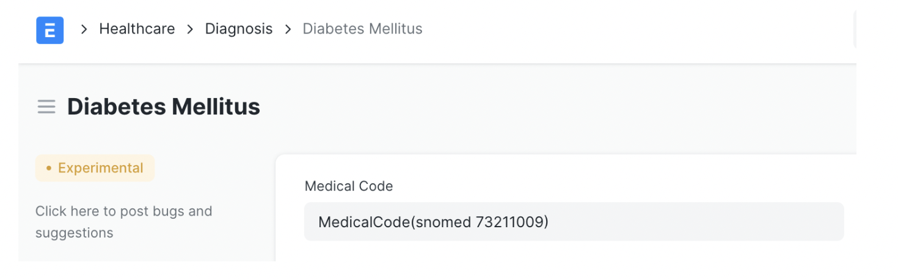

Integrating Frappe Health with SNOMED CT
Introduction
Frappe Health1 is an open-source Healthcare Information System(HIS), to efficiently manage clinics, hospitals, and other healthcare organizations. Frappe Health is built on the Frappe Framework2, a low code highly customizable framework.
Frappe Health provides support for integrating various medical coding standards3. In the patient encounter doctype, doctors can search and add pre-configured medical codes.

In this article, let’s see how to integrate Frappe Health with SNOMED CT.
SNOMED CT Integration
SNOMED CT4 is a comprehensive collection of medical terms which helps consistent data exchange between systems. It can also cross-map to other standards like ICD-10, LOINC, etc.
Since SNOMED CT is a huge dataset, it takes a lot of effort to import the entire dataset into Frappe Health. It also provides REST API to query SNOMED terms. Also, if your healthcare organization is focusing on only a specific domain, it doesn’t make sense to import the entire dataset.
In such scenarios, it is better to map only the required diagnosis, symptoms, and other clinical objects.
Frappe Health has a Diagnosis doctype where practitioners can enter diagnosis. We can add an additional field called Snomed Code to link diagnosis to relevant SNOMED code.

Frappe framework provides server script5 to dynamically run python script on any document event. We can write a simple python script to fetch relevant SNOMED code using SNOMED REST API. This script can be executed whenever the clinical object gets modified.

Here is a simple python server script that adds relevant snomed codes to diagnosis.
diagnosis = doc.diagnosis url = "https://browser.ihtsdotools.org/snowstorm/snomed-ct/browser/MAIN/descriptions?&limit=50&term=" + diagnosis + "&conceptActive=true&lang=english&skipTo=0&returnLimit=100" data = frappe.make_get_request(url) code = data['items'][0]['concept']['id'] description = data['items'][0]['concept']['fsn']['term'] mc = frappe.get_doc({ 'doctype': 'Medical Code', 'code': code, 'medical_code_standard': 'SNOMED', 'description': description, }) try: mc.insert() except: pass doc.medical_code = medical_code.name
After saving this script, if we go ahead and create or modify any diagnosis, it will automatically add relevant Snomed code to the diagnosis as shown below.

The server script makes sure all the diagnosis objects are codified automatically without any manual effort.
Since Frappe Framework & Frappe Health are low code, extremely customizable, we are able to integrate it with SNOMED in just a few minutes. Similarly, we can codify other clinical objects like Symptoms, Procedures, Medications, etc.